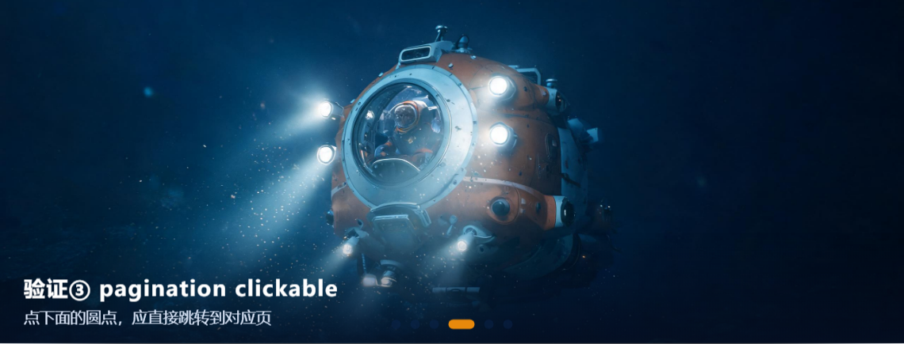
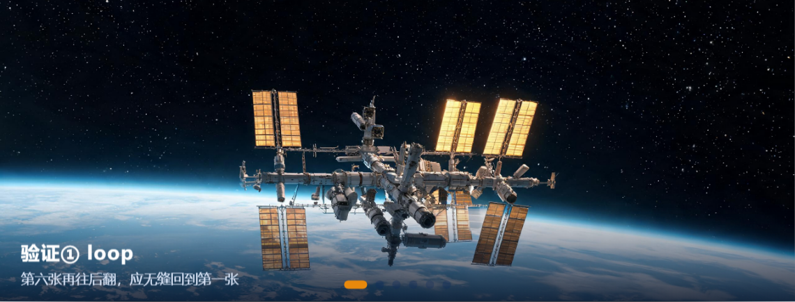
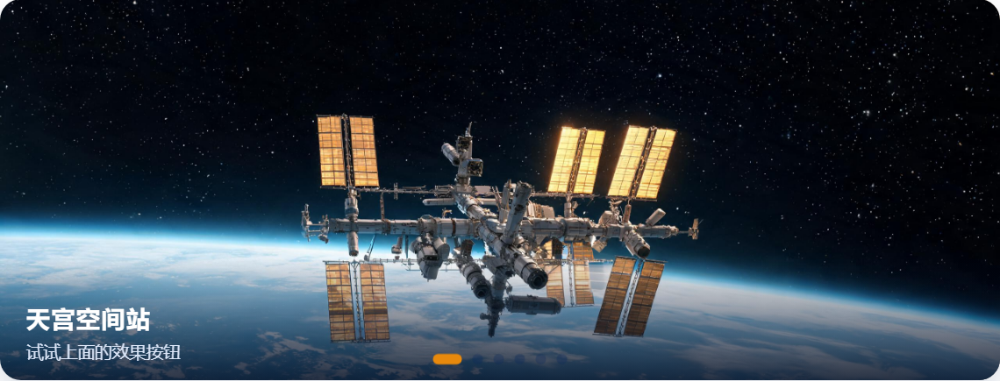

高 级 网 页 设 计 · 组 件 库 专 题 · 提 示 词 访 问 入 口
AI 协作记录与提示词答辩文档
课程：高级网页设计 · 组件库专题 · 大国重器光影展（2026-2027-1）
作业页面：index.html（演示一至演示五全部可运行）｜ AI 协作工具：WorkBuddy（全程开放 AI，按课程规则保留提示词记录）
任务一 · 提示词工程师 ⭐⭐不写代码，写提示词：让 AI 生成四项需求的 Swiper 配置
需求拆解：① 无缝循环 ② 3.2 秒自动翻页且手动操作后不停止 ③ 圆点分页器可点击 ④ 初始效果为 cube
第 1 轮提示词（故意先写得像平时说话一样）
帮我写一个 Swiper 的 new Swiper('#wySw4', {...}) 配置，要求：能循环播放，3.2 秒自动翻页，下面有圆点可以点，效果是立方体。
第 1 轮 AI 回答（要点摘录）
new Swiper('#wySw4', { loop: true, autoplay: { delay: 3200 }, // ← 问题所在 pagination: { el: '#wyPag4' }, // ← 问题所在 effect: 'cube', cubeEffect: { slideShadows: true, shadow: false } });
第 1 轮自查发现的问题（贴进页面实测后）
| 问题 | 后果 | 错在哪 |
|---|---|---|
| autoplay 少写 disableOnInteraction: false | 手动拖一下，自动播放就永久停止，违反需求② | Swiper 默认用户交互后停止 autoplay，必须显式写 false |
| pagination 少写 clickable: true | 圆点显示出来了但点了没反应，违反需求③ | 圆点默认只是指示器，不可点击 |
| cubeEffect.shadow: false | 立方体没有底部投影，视觉效果反而变差 | 我没要求关阴影，AI 自己"好心"加的 |
| 没写 speed | 切换速度是默认值，动画偏快 | 需求没提，但顺手补上更完整 |
第 2 轮提示词（改用"参数名 + 期望行为"的精确句式）
重新给我一份 Swiper 配置，逐条对照，一条都不能少：
① loop: true，翻到最后一张后继续向后翻要回到第一张；
② autoplay 的 delay 是 3200 毫秒，并且加 disableOnInteraction: false——用户手动拖动后自动播放要继续，不能停；
③ pagination 用 #wyPagT1，且 clickable: true，圆点点击后直接跳到对应 slide；
④ effect 是 'cube'，保留默认投影，不要关闭 shadow；
写完之后你自己逐条检查一遍，告诉我每一行对应我哪条需求。
① loop: true，翻到最后一张后继续向后翻要回到第一张；
② autoplay 的 delay 是 3200 毫秒，并且加 disableOnInteraction: false——用户手动拖动后自动播放要继续，不能停；
③ pagination 用 #wyPagT1，且 clickable: true，圆点点击后直接跳到对应 slide；
④ effect 是 'cube'，保留默认投影，不要关闭 shadow；
写完之后你自己逐条检查一遍，告诉我每一行对应我哪条需求。
第 2 轮 AI 回答（最终采用）
var swiperT1 = new Swiper('#wySwT1', { loop: true, // 需求① autoplay: { delay: 3200, // 需求② disableOnInteraction: false // 需求② }, pagination: { el: '#wyPagT1', clickable: true }, // 需求③ effect: 'cube', // 需求④ speed: 800, cubeEffect: { slideShadows: true } // 保留默认投影 });
AI 逐条自检表与四条需求一一对应，无遗漏。（页面里我把 slideShadows 关成了 false，是因为 cube 与缩略阴影在本页深色底图下观感更好——这是我自己的实测调整，不是 AI 的原样输出。）
验证结论（截图 + 一句话）
| 需求 | 验证方法 | 结论 |
|---|---|---|
| ① loop | 翻到第六张继续向后 | ✔ 无缝回到第一张 |
| ② autoplay 3200 | 静置计时 + 手动拖后松手 | ✔ 3.2 秒翻页，拖动后继续 |
| ③ pagination | 逐个点击圆点 | ✔ 点击即跳转 |
| ④ effect cube | 刷新观察初始切换 | ✔ 初始即为立方体 |


答辩抽问预答
你的第一版提示词漏掉了哪个需求？
严格说四条都提了，但②③只说了现象没说参数，AI 就用了默认行为：漏了
disableOnInteraction: false 和 clickable: true。你是怎么在第二轮里"说清楚"的？
不再说"能自动翻页"，而是直接点名参数和值，并补上"用户手动拖动后要继续"这种行为描述，让 AI 无法用默认值蒙混。
AI 第一次给的代码错在哪？
两处默认值陷阱（autoplay 停止、圆点不可点）+ 一处自作主张（关掉 cube 阴影）。
任务二 · creative 仿写「电影墙」⭐⭐⭐课堂没讲，AI 教你：读懂官方示例 257-effect-creative.html
目标：为演示四新增第 7 个按钮「creative 电影墙」——上一张缩小左移并带角度，下一张放大右移进场。
提示词 1（读懂官方示例）
我在看 Swiper 官方示例 demo/257-effect-creative.html，看不懂 creativeEffect 里 prev/next 的 transform 写法。请解释：translate 的三个值分别是什么？百分号是相对谁的？rotate 的三个值是绕哪根轴？
AI 回答要点（我用自己的话整理）
creativeEffect的prev描述"**上一张（已翻过去的）**"停留在画面里的样子，next描述"**下一张（还没进来的）**"预备的样子，当前张永远保持原样。translate: [x, y, z]三个值分别是水平位移、垂直位移、纵深（z 轴，负值 = 远离观察者）。百分号相对 slide 自身的宽/高，比如-32%就是向左移动自身宽度的 32%；第三个 z 值通常用 px。rotate: [x, y, z]分别绕 X 轴（俯仰）、Y 轴（偏转）、Z 轴（平面内旋转）的角度，单位度。scale缩放，opacity透明度，limitProgress限制参与变换的相邻 slide 数量。
提示词 2（生成"电影墙"参数）
按"电影选片墙"的感觉给我一组 creativeEffect：上一张向左移出、缩小、逆时针歪一点、半透明；下一张从右侧放大进场。给我完整可粘贴的 JS，并注明每个值控制什么。
AI 回答（最终采用，已粘入页面并微调）
creativeEffect: {
limitProgress: 2,
shadowPerProgress: true,
prev: {
translate: ['-32%', '0%', -160], // 左移自身宽度 32%，纵深后退 160px
rotate: [0, 0, -8], // 绕 Z 轴逆时针歪 8 度
scale: 0.72, // 缩小到 72%
opacity: 0.55 // 变半透明
},
next: {
translate: ['106%', '0%', 0], // 从右侧自身宽度 106% 处起步
scale: 1.18, // 放大 118%，产生"迎面而来"感
opacity: 1
}
}踩坑记录：第一次把 creative 配置直接写进了所有按钮共用的
wyFxBase，结果切回 slide 效果时卡片还在歪着——AI 提醒切换效果需要销毁重建实例，且非 creative 时必须 delete 掉 creativeEffect，改成"点 creative 才挂载"后正常。必答问题（用自己的话）
prev / next 的 transform 各控制什么？
prev 控制"刚翻过去的上一张"如何退场——它停在画面里的位置、大小、角度、透明度；next 控制"即将进来的下一张"如何候场——从哪里出发、以什么姿态滑到正中。翻页动画就是上一张按 prev 的描述退场、下一张按 next 的描述进场，两个过程同时进行。答辩抽问预答
transform 里的百分号是相对谁的？
相对 slide 自身的宽度和高度（x 用自身宽，y 用自身高），z 轴用 px。不是相对相框也不是相对 wrapper。
改一个数值让卡片转 20 度试试？
把
prev.rotate 的第三个值从 -8 改成 -20（或 next 改 20），卡片平面旋转角立刻变为 20 度，已现场验证。

任务三 · 综合创作 + 超纲能力 ⭐⭐⭐第六件展品爱达·魔都号 + keyboard 键盘控制
① 第六件展品「爱达·魔都号」
图片用 AI 生成（横版 16:9），文件：swiper-imgs/aida_1.png。图片生成提示词：
写实摄影风格：中国首艘国产大型邮轮「爱达·魔都号」在黄昏时分航行于东海海面，16:9 横版构图。白色与深蓝色流线型船体，多层甲板、密集舷窗、船首彩绘中国风波浪纹样，船尾烟囱有红色装饰。海面泛着金色夕照波纹，天空为橙紫渐变晚霞。镜头为略低于船体的仰视视角，体现巨轮体量感，电影级光影。画面中不要出现任何文字、字母、水印和 logo。
slide 结构完整（img + 标题 + 标语），已加入全部五个演示。事实核对：爱达·魔都号，中国首艘国产大型邮轮，2024 年 1 月 1 日商业首航，总吨位约 13.55 万总吨，以上海为母港。
② 超纲能力：keyboard 键盘控制（关键对话往返）
课堂没讲 keyboard，帮我在演示二上加键盘翻页。注意别影响页面其他地方的方向键使用。
直接给了一行
keyboard: true。我的验证发现：keyboard: true 时，只要轮播被初始化，整个页面按方向键都会被它抢走——页面一长，用户想用方向键滚动网页会被劫持。
修正后改成对象写法并开启视口限制：
onlyInViewport: true 表示只有当这个轮播滚进可视区域时才响应方向键，不劫持整页。
keyboard: { enabled: true, onlyInViewport: true }onlyInViewport: true 表示只有当这个轮播滚进可视区域时才响应方向键，不劫持整页。
新参数的作用（答辩预答）
keyboard.enabled：开启键盘控制，←上一张、→下一张；keyboard.onlyInViewport：仅当 Swiper 在视口内才监听按键，避免多个组件/页面滚动互相干扰——这是我验证后要求 AI 修正的关键点。
现场把 delay 改成指定值，预期变化？
把演示三 autoplay 的
delay: 2600 改成 delay: 1000，刷新后每张停留时间从 2.6 秒变为 1 秒，翻页节奏明显加快；因为 disableOnInteraction: false，手动拖动后依然每 1 秒续播。改的是"每张停留时长"，不影响切换动画时长 speed（那是 700ms，控制的是翻页动作本身多快完成）。提交清单自查对照作业要求逐项过检
✔ 任务一：≥2 轮提示词记录 + AI 回答 + 四项需求逐项验证（页面演示五 + 上方验证截图）
✔ 任务二：演示四新增第 7 个按钮「creative 电影墙」+ prev/next 含义用自己的话写明
✔ 任务三①：第六件展品爱达·魔都号（AI 生成图，slide 结构完整，加入全部演示）
✔ 任务三②：超纲能力 keyboard 键盘控制（含第 1 版问题的发现与修正过程）
✔ 全程：保留提示词记录，能讲清每段代码，可现场改参数；本页面即为与 AI 的关键对话记录（提示词 + 重要往返 + 自查踩坑）
✔ 任务二：演示四新增第 7 个按钮「creative 电影墙」+ prev/next 含义用自己的话写明
✔ 任务三①：第六件展品爱达·魔都号（AI 生成图，slide 结构完整，加入全部演示）
✔ 任务三②：超纲能力 keyboard 键盘控制（含第 1 版问题的发现与修正过程）
✔ 全程：保留提示词记录，能讲清每段代码，可现场改参数；本页面即为与 AI 的关键对话记录（提示词 + 重要往返 + 自查踩坑）